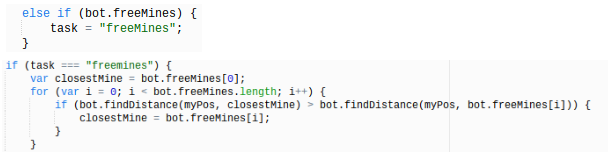

☰ Menu
Mines (Deciding What)
 Gold mines in the vindinium are the way to get points. Every gold mine you capture in the game, gives you points. The whole point of the game is to collect the most gold so that you can be the champion of the game.
The code above tells the bot where every unoccupied gold mine is located in the game. This code finds which free mine is the closest to the bot, and then commands the bot to go collect that free mine for itself. The code does this action by beginning with an else if statement, which has the condition bot.freeMines. If the condition is equal to the free mines, then the task of the bot will be to go to the free mines available. Moving forward, the code creates an if statement that tests if the task is truly equal to freemines. If it is equal then it creates an array of the location of all the free mines. It runs a loop that looks at every free mines in the array, and identifies the length between the bot, and each free mine. The closest mine in the array is identified by the bot as the closest mine, so the bot finds its location (x, and y), and takes that mine for itself. I decided to do this because I understood that if I wanted the bot to collect mines, I needed to find out if they were not occupied by other enemy bots. The reason, is that if my bot were to try and collect an enemy mine it would lose 20 health, which is not good. So finding the free mines is instead is better. I chose to find the closest mine because I didn't want the bot to waste time, and be threatened by other bots just to get a mine far away. I wanted to be quicker to get free mines, so I could get more points than the other enemy bots. Deciding How
I made it possible for the my bot to find the closest gold mine, by using very simple codes. To make the bot able to locate any gold mines in the game, I had to create an else if statement with the condition of bot.freeMines, which is an array of the all the free mines locations. This is used when creating any vindinium bot. I set the task to the variable “freeMines” which is telling the bot to locate the free mines in the game.
To make sure the task is evident, I created an if statement to check if it's true that the task is = “freeMines”;. The statement was true, so the bot is capable of carrying out the task. I had to run a loop so that I could allow the bot to locate the array, and find the distance between the bot, and of each free mine. Once the bot locates the array it looks at the distance of all the free mines from the bot, and searches for the closest free mine in distance. After finding the closest mine to my bot, the bot completes the task and takes over the mine as it’s own.